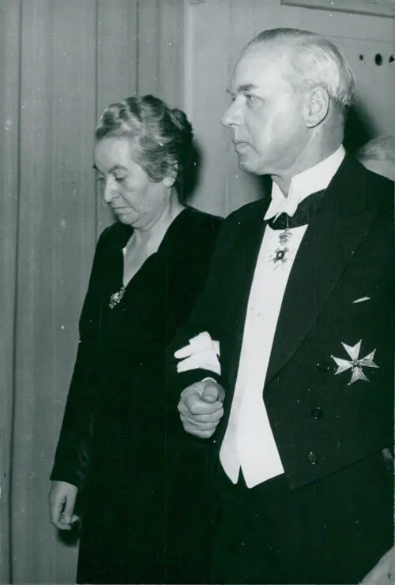

Gabriela Mistral, Premio Nobel

El 15 de noviembre de 1945, la Academia Sueca anunció que Gabriela Mistral recibiría el Premio Nobel de Literatura, que le fue entregado en Estocolmo el 10 de diciembre de ese año. Fue la primera persona de América Latina en obtenerlo. Nacida como Lucila Godoy Alcayaga en Vicuña, en el Valle de Elqui, se formó como maestra y alcanzó notoriedad en 1914 al ganar los Juegos Florales de Santiago con los "Sonetos de la muerte". Su obra, con libros como Desolación (1922), Ternura (1924), Tala (1938) y Lagar (1954), aborda la infancia, la maternidad, la muerte, la fe y el paisaje americano. Colaboró con la reforma educacional de México y fue cónsul de Chile en varios países, por lo que vivió gran parte de su vida en el extranjero. El premio dio proyección internacional a la literatura chilena, que volvería a ser reconocida con el Nobel de Pablo Neruda en 1971. En Chile, el Premio Nacional de Literatura le fue concedido recién en 1951. Estudios recientes han profundizado en su pensamiento sobre la educación, los pueblos indígenas y la situación de las mujeres.
Versión para niños
Gabriela Mistral nació en 1889 en Vicuña y creció en el Valle de Elqui, rodeada de cerros. Fue profesora y escribió poemas llenos de cariño por los niños, la naturaleza y los pueblos de América. El 15 de noviembre de 1945 se anunció que había ganado el Premio Nobel de Literatura, uno de los premios más importantes del mundo. Fue la primera persona de América Latina en recibirlo. En Chile, la noticia se celebró con mucho orgullo.
Para maestros
Nivel sugerido: 2° medio
Objetivo: Valorar el aporte de Gabriela Mistral a la cultura y la educación, y comprender la proyección internacional de Chile a mediados del siglo XX.
Preguntas para la clase:
- ¿Qué temas de la vida de Gabriela Mistral aparecen en sus poemas?
- ¿Por qué crees que fue reconocida antes en el extranjero que en Chile?
- ¿Qué desafíos enfrentaban las mujeres escritoras y profesionales en esa época?
Actividad (20–30 min): En grupos, los estudiantes leen un poema breve de Ternura y lo relacionan con la labor de Mistral como maestra. Luego, cada grupo presenta una idea sobre la visión de la infancia que transmite el texto.
Fuentes sugeridas: Memoria Chilena; Biblioteca Nacional Digital; Museo Gabriela Mistral de Vicuña.
Objetivos de Aprendizaje (Currículum Nacional)
- 1° básico · HI01 OA 07 Conocer sobre la vida de hombres y mujeres que han contribuido a la sociedad chilena … los artistas y los grandes poetas
- 6° básico · HI06 OA 07 Explicar y dar ejemplos de la progresiva democratización de la sociedad durante el siglo XX … la participación de la mujer en la vida pública
- 2° medio · HI2M OA 07 Evaluar cómo la participación de nuevos actores sociales … contribuyeron a la democratización de la sociedad chilena … la incorporación de las mujeres a la ciudadanía política
Personajes
Revisión humana pendiente. Cómo se revisa · Reportar un error
Cómo citar: Historia de Chile. (2026). Gabriela Mistral, Premio Nobel. En Historia de Chile: atlas y línea de tiempo. https://moises-salgado.github.io/historia-de-chile/momento/gabriela-mistral-premio-nobel.html